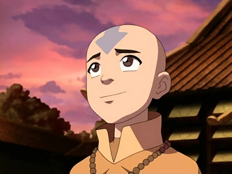
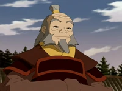
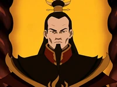
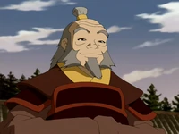
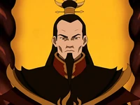

Principales



1:Aang, Es el protagonista de Avatar: La Leyenda de Aang.Es un Nómada Aire nacido en el 12 del AG y el Avatar durante el conflicto de un siglo de duración conocido como la Guerra de los Cien Años.
2:Katara es un personaje principal de Avatar: La Leyenda de Aang. Es una maestra agua, nacida y criada en la Tribu Agua del Sur por su abuela, Kanna, junto a su hermano mayor Sokka. Es la hija menor del Jefe Hakoda y Kya. Katara junto a Sokka, encontró a al Avatar Aang encerrado en un iceberg por más de 100 años. Después de entablar una amistad con él, Katara y su hermano acompañaron a Aang en su búsqueda de controlar los Cuatro Elementos.
3:Sokka era un guerrero adolescente de la Tribu Agua del Sur y el hijo del Jefe Hakoda y Kya. Tras la muerte de su madre y después de que su padre se marchara junto con todos los demás hombres adultos de su tribu para luchar en la Guerra de los Cien Años, Sokka fue criado por su abuela, Kanna, junto a su hermana menor Katara.
4:Toph Beifong es un personaje principal de Avatar: La Leyenda de Aang que hizo su primera aparición en el Libro Dos: Tierra (土). Toph es una maestra de la Tierra Control y una de las más poderosas de su tiempo. Ciega de nacimiento, Toph fue tratada con condescendencia constantemente a causa de su discapacidad y estatura, en especial por sus padres sobreprotectores. Al descubrir a los tejones topo, animales capaces de hacer Tierra Control que también eran ciegos, aprendió a usar la Tierra Control como una extensión de sus sentidos. Esto le dio la capacidad de "ver" a través de toda pequeña vibración que ocurriera en el suelo.
 


1:El Señor del Fuego Zuko, anteriormente con el título de Príncipe Zuko, es un personaje principal de Avatar: La Leyenda de Aang, que fue el antagonista del Libro Uno: Agua, Libro Dos: Tierra y eventualmente un aliado en Libro Tres: Fuego como miembro del Equipo Avatar. Es un Maestro del Fuego Control proveniente de la Familia Real de la Nación del Fuego, nacido como el Príncipe heredero. Su historia a menudo fue paralela a la del Avatar Aang. Inicialmente, fue el principal enemigo del Equipo Avatar, la vida de Zuko giraba en torno a tratar de capturar al Avatar perdido hace mucho tiempo para poner fin a su exilio y recuperar su honor como el Príncipe heredero de la Nación del Fuego.
2:La Princesa Azula es un personaje recurrente del Libro Dos: Tierra (土) y Libro Tres: Fuego (火) de la serie Avatar: La Leyenda de Aang. Es un enemigo clave del Equipo Avatar tras forjar su misión de perseguir al Avatar Aang y a su hermano desterrado en el Reino Tierra, el Príncipe Zuko; en compañía de sus dos mejores amigas y aliadas, Mai y Ty Lee. Es la Princesa de la Nación del Fuego, hija del Señor del Fuego Ozai y la Princesa Ursa, nieta de Azulon y hermana menor de el posterior Señor del Fuego Zuko, y medio-hermana de Kiyi. Es una prodigio del Fuego Control, siendo la única persona vista en poder generar llamas azules y relámpagos. Gracias a sus excelentes capacidades de estrategia, orquestó la victoria de la Nación del Fuego sobre la capital del Reino Tierra, Ba Sing Se, y detuvo la invasión en el Día del Sol Negro.
3:Iroh fue un general retirado de la Nación del Fuego, un anterior príncipe heredero de su nación, Gran Loto de la Orden del Loto Blanco, un Maestro Fuego, y un sabio mentor para su sobrino Zuko. Él era el primogénito del Señor del Fuego Azulon e Ilah, y el hermano mayor de Ozai. La bien conocida habilidad de Iroh de respirar fuego, y sus afirmaciones de "matar" al último dragón, le valieron el título honorífico de "El Dragón del Oeste"
4:El Señor del Fuego Ozai fue el gobernante tiránico de la Nación del Fuego durante los últimos años de la Guerra de los Cien Años. Fue el segundo hijo de Azulon e Ilah, el hermano menor de Iroh, el marido de Ursa, y el padre del Príncipe Zuko y la Princesa Azula. Como cada Señor del Fuego, Ozai fue un Maestro del Fuego Control, y antes del final de la Guerra, se creía que había sido uno de los Maestros Fuego más poderosos en el mundo.

1:Ty Lee es un personaje secundario de Avatar: La Leyenda de Aang. Hija de un noble, asistió a la Academia Real del Fuego para Chicas con sus amigas de toda la vida, la Princesa Azula y Mai. Cuando era niña, Ty Lee lidiaba con seis hermanas idénticas a ella, lo que hizo que sintiera una pérdida de individualidad, el deseo de ser una persona distinta y reconocible, y un deseo por atención de otras personas. Por esto, después de que ella madurara, se escapó de su casa y se unió a un Circo de la Nación del Fuego, convirtiéndose en una artista experta acrobática y ganando más atención personal.
2:Bumi fue el salvaje, excéntrico, loco y anciano Rey de Omashu. Cuando era niño, Bumi era un amigo cercano de Aang, y fue el único amigo de Aang desde antes de la Guerra de los Cien Años confirmado que todavía estaba con vida. Él se había convertido en un anciano y excéntrico, con tendencia a cacarear y reírse de chistes sin gracia. A pesar de su edad supercentenaria y su aparente fragilidad, Bumi fue un Maestro de la Tierra Control y estaba bastante en forma para su vejez, se autodenominó en un momento como "el Maestro Tierra más poderoso que jamás había visto".
3:Mai es un personaje secundario de Avatar: La Leyenda de Aang, antagonista recurrente del Libro Dos: Tierra y posteriormente aliada en el final del Libro Tres: Fuego. Mai es la hija mayor de Ukano y de Michi, y la hermana mayor de Tom-Tom. Junto a su amiga de la infanca: La Princesa Azula, Mai se convirtió en uno de los mayores enemigos del Equipo Avatar, y también tuvo al Príncipe Zuko como su interés amoroso.
4:Suki es un personaje recurrente de Avatar: La Leyenda de Aang . Es la líder de las Guerreras Kyoshi de la Isla Kyoshi del Reino Tierra. Comenzó su formación cuando apenas tenía ocho años y es muy respetada por sus compañeras. Cuando el Equipo Avatar llegó a Isla Kyoshi, Suki y otras Guerreras Kyoshi los capturaron, pensando que eran espías de la Nación del Fuego. Más tarde, tras darse cuenta de que Aang era el Avatar, los liberó y se hizo amiga de ellos, en particular de Sokka.